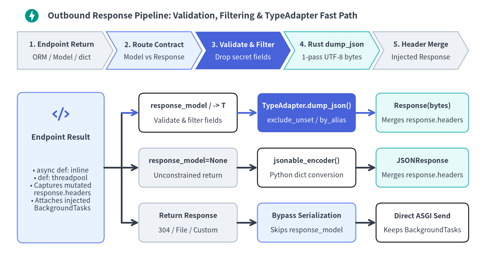
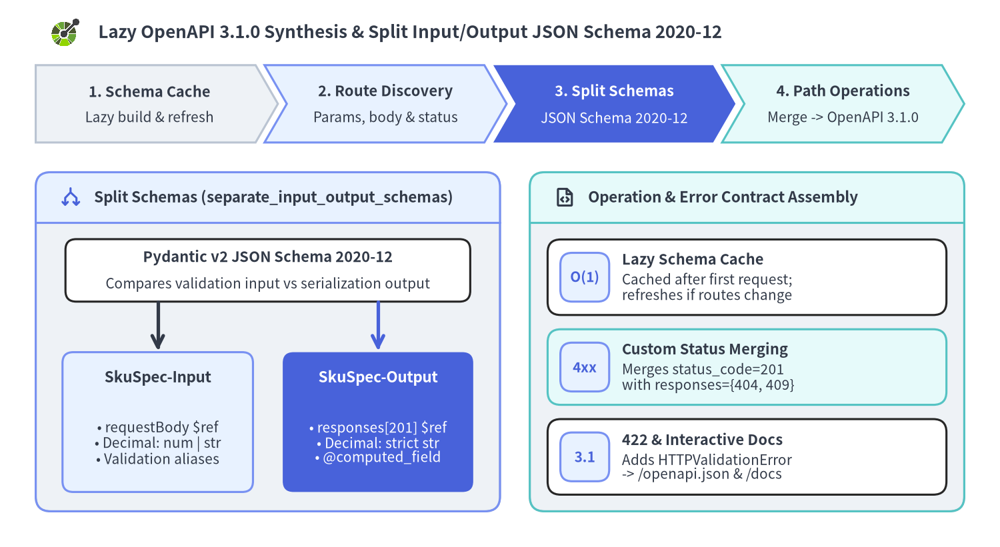

Response Serialization, Status Codes & OpenAPI 3.1
FastAPI enforces outbound API contracts through automatic response validation and filtering—stripping sensitive fields and emitting UTF-8 JSON bytes in a single Pydantic v2 Rust pass—while lazily synthesizing OpenAPI 3.1.0 specifications with split input/output JSON Schema 2020-12 definitions.

Decoupling internal persistence models from outbound DTOs prevents accidental credential leaks while maximizing serialization throughput via Pydantic's compiled Rust core.
1. Response Validation, Filtering & Serialization
When registering a path operation, FastAPI resolves the outbound response contract according to a strict precedence chain:
| Declaration Pattern | Active Response Contract | Runtime Serialization Path |
|---|---|---|
@app.get(..., response_model=PublicDTO) |
PublicDTO (overrides return hint) |
Validates & strips fields, then emits UTF-8 bytes via Rust TypeAdapter.dump_json() |
async def ep(...) -> PublicDTO: (no response_model) |
PublicDTO (from return annotation) |
Return annotation automatically acts as the response validation & OpenAPI contract |
@app.get(..., response_model=None) or -> Response |
Disabled | Skips response schema validation; allows Response | dict unions and uses jsonable_encoder() for plain objects |
Endpoint returns a Response instance at runtime |
(Bypassed for that call) | Sends the Response instance directly without response_model filtering |
Whenever a response contract is active and response_class remains the default JSONResponse, FastAPI executes a streamlined three-step outbound pass:
- Contract Validation & Security Filtering: FastAPI validates the returned object (
ORMentity,BaseModel, ordict) against the response model usingfrom_attributes=True(inline on the event loop forasync defroutes, or in a worker threadpool for syncdefroutes). Unlisted attributes—such ashashed_passwordortotp_secret—are stripped automatically, and contract mismatches raise a server-sideResponseValidationError(500) rather than leaking malformed payloads. - One-Pass Rust JSON Bytes (
TypeAdapter.dump_json): Instead of building intermediate Python dictionaries and callingjson.dumps(), FastAPI serializes the validated value directly through Pydantic v2'sTypeAdapter.dump_json()—applyingresponse_model_include,response_model_exclude,response_model_by_alias,response_model_exclude_unset,response_model_exclude_defaults, andresponse_model_exclude_none—and wraps the UTF-8bytesdirectly inResponse(media_type="application/json"). - Status-Code Body Rules & Header Merging: Any headers or
Set-Cookiedirectives recorded on an injectedresponse: Responseparameter are merged onto the final response, while bodyless HTTP status codes (204,205,304,1xx) always emit an empty body (b"").
Security Field Stripping & Sparse PATCH (exclude_unset)
Pairing an internal database model with response_model=UserPublic guarantees secret fields never cross the wire, while response_model_exclude_unset=True omits default fields that were not explicitly populated in partial PATCH payloads:
from typing import Any, Literal
from fastapi import FastAPI
from pydantic import BaseModel
app = FastAPI(title="Identity Profile API", version="1.0.0")
class UserRecordDB(BaseModel):
user_id: str
username: str
email: str
hashed_password: str
totp_secret: str
class UserPublic(BaseModel):
user_id: str
username: str
email: str
class ProfilePatch(BaseModel):
display_name: str = "Anonymous"
bio: str | None = None
theme: Literal["light", "dark"] = "light"
@app.get("/users/{user_id}", response_model=UserPublic)
async def get_user_profile(user_id: str) -> Any:
return UserRecordDB(
user_id=user_id,
username="alice",
email="alice@example.com",
hashed_password="$argon2id$v=19$m=65536,t=3,p=4$redacted",
totp_secret="JBSWY3DPEHPK3PXP",
)
@app.patch(
"/users/{user_id}/preferences",
response_model=ProfilePatch,
response_model_exclude_unset=True,
)
async def patch_preferences(user_id: str, patch: ProfilePatch) -> ProfilePatch:
_ = user_id
return patch
Injected Response Mutation vs Direct Response Bypass
Inject response: Response as a parameter whenever you need custom headers or hardened cookies (__Host- prefix, httponly=True, secure=True, samesite="lax") while retaining response_model filtering. Return a raw Response instance (with response_model=None if mixed with other return types) only when intentionally bypassing serialization—such as 304 Not Modified cache hits:
from typing import Annotated
from fastapi import FastAPI, Header, Response, status
from fastapi.responses import JSONResponse
from pydantic import BaseModel, Field
app = FastAPI(title="Session & Cache API", version="1.0.0")
class SessionSummary(BaseModel):
session_id: str
active: bool
internal_signing_kid: str = Field(exclude=True, default="kid_v3")
@app.post("/sessions", response_model=SessionSummary)
async def issue_session(response: Response) -> dict[str, object]:
response.headers["Cache-Control"] = "no-store"
response.set_cookie(
key="__Host-session",
value="tok_opaque_random",
httponly=True,
secure=True,
samesite="lax",
path="/",
)
return {
"session_id": "sess_9001",
"active": True,
"unlisted_debug_token": "stripped-by-response-model",
}
@app.get("/health/raw", response_model=None)
async def raw_probe(etag_match: Annotated[str | None, Header()] = None) -> Response:
if etag_match == '"v1"':
return Response(status_code=status.HTTP_304_NOT_MODIFIED)
return JSONResponse(content={"status": "ok"}, headers={"ETag": '"v1"'})
2. Lazy OpenAPI 3.1.0 Synthesis & Split Input/Output Schemas
Rather than slowing down application startup, app.openapi() synthesizes the OpenAPI 3.1.0 specification lazily on the first /openapi.json request (or direct app.openapi() call) and caches the generated dictionary in memory. If dynamic routers or webhooks are added later, FastAPI automatically invalidates and rebuilds the cached schema on the next access.
OpenAPI synthesis proceeds through three stages:
- Schema Cache & Route Discovery: FastAPI walks every included
APIRouteand@app.webhooksoperation, collecting request body models, primaryresponse_modelcontracts, custom status-code models fromresponses={...}, streaming item schemas, callbacks, and all parameters declared across nestedDepends()andSecurity()functions. - Split Input/Output JSON Schema 2020-12: With
separate_input_output_schemas=True(the default onFastAPI), Pydantic v2 generates separate validation and serialization JSON Schemas under#/components/schemas/. Whenever a model's input and output representations differ—such asDecimalfields (acceptingnumber | stringon input, emitting exactstringon output),@computed_fieldproperties, orserialization_alias—OpenAPI automatically emits distinct<Model>-Inputand<Model>-Outputcomponent schemas. - Operation & Error Contract Merging: FastAPI deduplicates shared dependency parameters, assigns each route's
operationId, merges customresponses={404: ..., 409: ...}definitions alongside the default successstatus_code, and automatically adds422(HTTPValidationError) whenever parameters or request bodies exist.

Documenting Error Contracts & Verifying Split OpenAPI 3.1 Schemas
Passing responses={404: {"model": ErrorDetail}, 409: {"model": ErrorDetail}} registers typed error schemas alongside status_code=201, while Decimal on SkuSpec triggers SkuSpec-Input and SkuSpec-Output in app.openapi():
from decimal import Decimal
from fastapi import FastAPI, status
from fastapi.responses import JSONResponse
from pydantic import BaseModel
app = FastAPI(title="Warehouse SKU API", version="2.0.0")
class ErrorDetail(BaseModel):
code: str
message: str
class SkuSpec(BaseModel):
sku: str
unit_price: Decimal = Decimal("19.99")
store: dict[str, SkuSpec] = {"SKU-100": SkuSpec(sku="SKU-100")}
@app.post(
"/skus",
response_model=SkuSpec,
status_code=status.HTTP_201_CREATED,
responses={
404: {"model": ErrorDetail, "description": "Parent warehouse not found"},
409: {"model": ErrorDetail, "description": "SKU already exists"},
},
)
async def register_sku(spec: SkuSpec) -> SkuSpec | JSONResponse:
if spec.sku in store:
return JSONResponse(
status_code=status.HTTP_409_CONFLICT,
content={"code": "SKU_CONFLICT", "message": f"{spec.sku} already exists"},
)
store[spec.sku] = spec
return spec
openapi_doc = app.openapi()
assert openapi_doc["openapi"] == "3.1.0"
assert "SkuSpec-Input" in openapi_doc["components"]["schemas"]
assert "SkuSpec-Output" in openapi_doc["components"]["schemas"]
assert set(openapi_doc["paths"]["/skus"]["post"]["responses"]) >= {"201", "404", "409", "422"}
For inbound parameter and multipart body binding rules, revisit Path, Query, Header, Cookie & Body. Next, explore how FastAPI resolves hierarchical Depends() graphs in Dependency Graph, Caching & Scopes, or how itemSchema powers streaming OpenAPI contracts in Native SSE, JSONL & WebSockets.